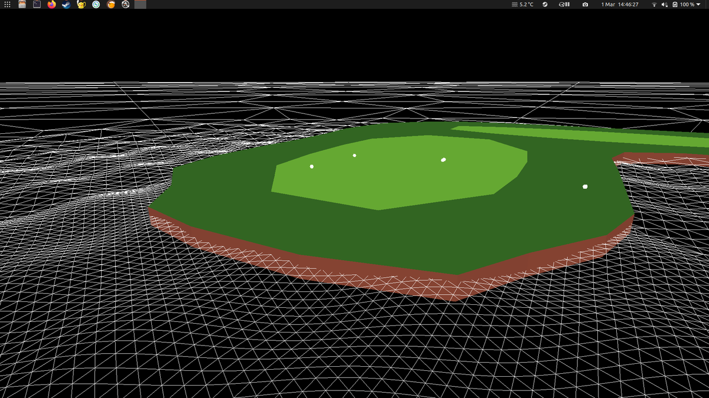
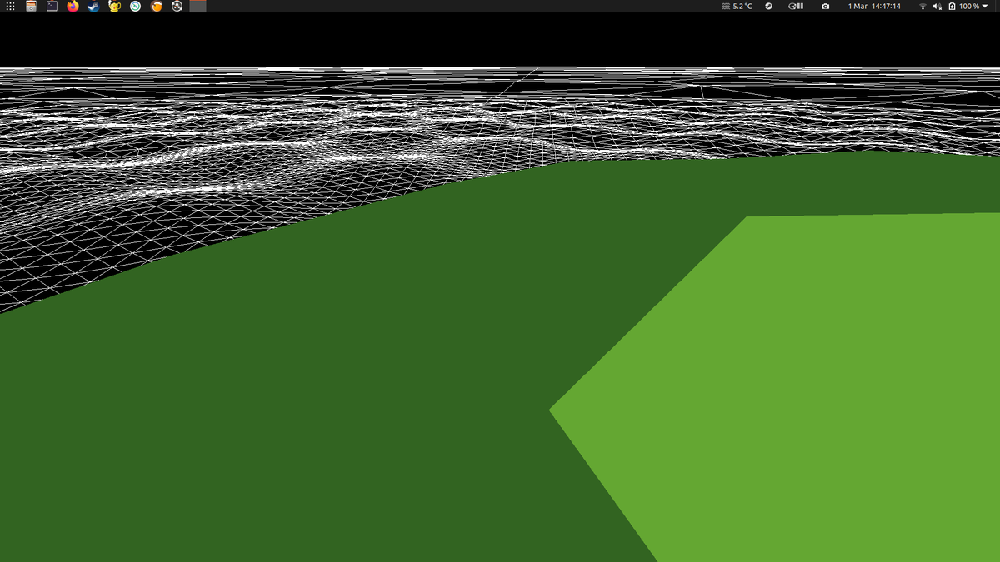
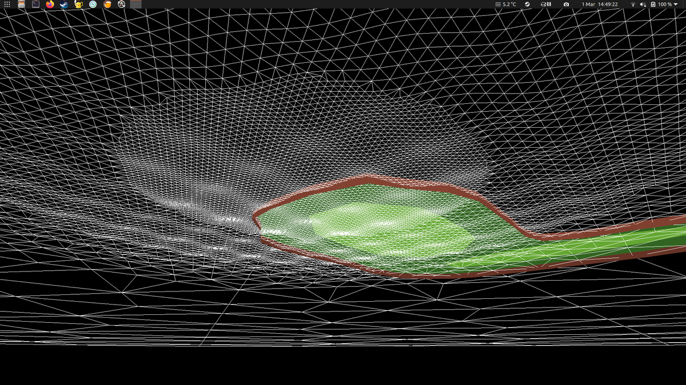
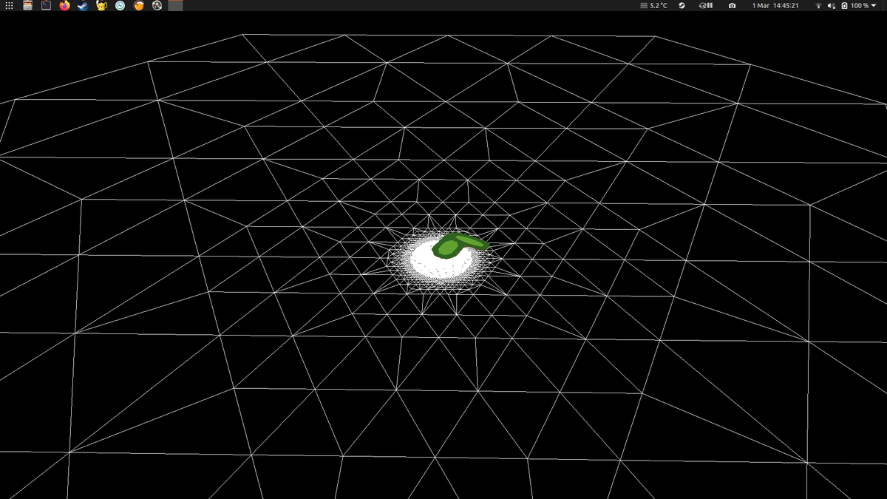
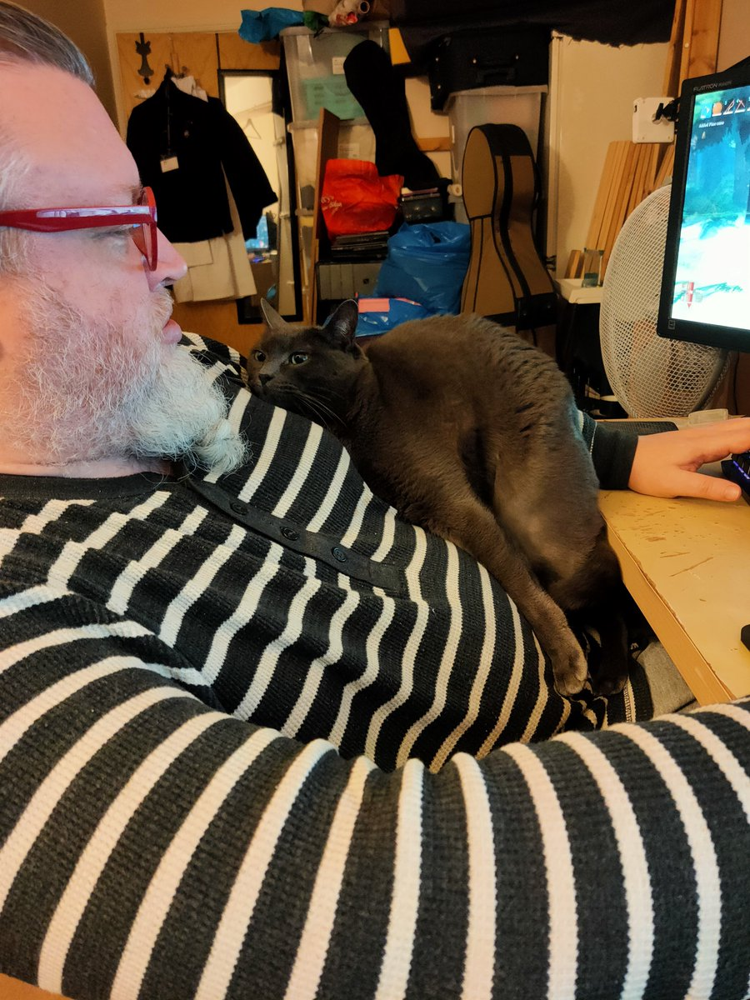

https://twitter.com/KeaneGames/status/1370419672936484864 @KeaneGames I know windows has got better at this sort of thing over the years but I still find myself installing sysinternals. Bit of an old habit that is now even blessed by microsoft.
https://docs.microsoft.com/en-us/sysinternals/downloads/process-explorer
or maybe that's even worse for you :)
I'm really enjoying how NFTs are an amazingly easy way of helping you sort the people who like money from the people who like art.
I mean, it is always pretty easy but NFTs just make it so obvious.
https://twitter.com/grisevg/status/1369707577941057545 @grisevg @shi @magic_bane sure, maybe this wednesday 7-9 so same day of week and time?
I don't know how discord works, how about we visit old virtual worlds instead.
Where do you want to go first, second life? roblox? maple story? Runescape? the list is endless... :)
Doors are interactive objects that have far reaching impact on the state of the game world.
A game should be full of such objects because it is the only medium they can exist in.
Maybe, if you feel that doors are a unique problem, then you are perhaps not making a game? https://twitter.com/pcgamer/status/1369633857083936777
REMEMBER!
Only you can prevent prime goo!
Why create a non fungible token when you could just upload a furry to second life instead?
been playing the old valheim with twitch turned on recently and that is about to continue at https://www.twitch.tv/wetgenes
A hexagon and a bit of variable subdivision based on distance of each edge from the center looks like it will make a nice base water mesh.




sweet mother of repeating uv maps https://twitter.com/algoritmic/status/1365672090356092928
https://twitter.com/IcepickInTheory/status/1365044693776666630 @IcepickInTheory It's all my fault for moving the chair a bit higher then sitting with my legs under the desk without providing ample cat space.
Very inconsiderate of me really.
A perfectly normal cat doing a perfectly normal sit.

Bruce Willis used to be small enough to fit in ventilation shafts but he more than doubled in size when he transformed into Bald Willis. https://twitter.com/mythVSfacct/status/1364450863301816323
https://twitter.com/derElbi/status/1362036375462232065 @derElbi I saw the sequel when it came out which was more than a year ago, maybe 5 and that pretty much fell out of my brain as all I can remember is that there was a sequel.
But yes you have to watch both now :)
https://twitter.com/arosbottom/status/1362080571598454784 @arosbottom I remember it is something silly like medibyte or mebibyte I forget which.
Strange official names.
https://twitter.com/arosbottom/status/1362073518758912011 @arosbottom It's all part of the hard drive conspiracy to sell you smaller drives than you expect.
MiB is megabyte as everyone else expects(power of 2), MB is megabyte as hard drive sellers imagine it (power of 10).
Same for gig.
Please do not tell me about the baby Shoggoths in Antarctica. https://twitter.com/Lee__Drake/status/1357911580671758337
This is the darkest timeline.
Other timelines get to log into @wuchess instead. https://twitter.com/HTHRFLWRS/status/1352789716266004480